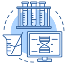

推進委員会

- 政府省庁の感染病への対応 R&D 推進委員会は
- 未来の社会環境の変化による新・変種感染病の先制及び早期対応のため、国民の健康と社会安
定に波及力の高い感染病分野にR&D投資を拡大し、感染病対応基盤技術及び인프라
強化のための政府省庁間の協力体系を構築していきます。
- 感染病に対する国家的な対応能力の確保
- 政府省庁感染病対応研究開発推進委員会は‘感染病危機時「国家主導の迅速かつ効率的
な先制的対応」을 ための「国家感染症危機対応技術開発推進戦略」’を樹立しました。
- 感染病の心配のない健康で安全な社会を実現
- 国家次元の感染病転周期対応体系構築、危機克服技術の向上, 未来の社会イシューおよび産学連
関協力強化のため、韓国内外の感染病研究の現況および方向を共有し、共同イシュー発掘および研究協力ネッ
トワークを構築します。